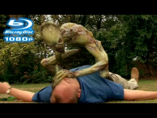
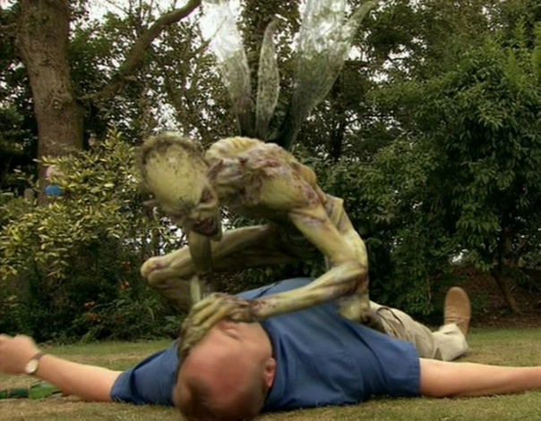

Весь 1-й сезон (13 серий)
 | Весь 1-й сезон (13 серий) |
Small Worlds
Дата выхода: 12 ноября 2006
Формат: 50-минутный эпизод
| Варианты озвучек: | * Разные: смотрите по инструкции |
|---|---|
| Скачивание и просмотр: |
Джек сталкивается с монстрами из собственного прошлого - феями. Способные убивать людей удушьем и сменять погоду, они устраивают серию убийств, связанных с одной особенной маленькой девочкой. Сможет ли Торчвуд справиться с силами, которые господствуют множество веков?
